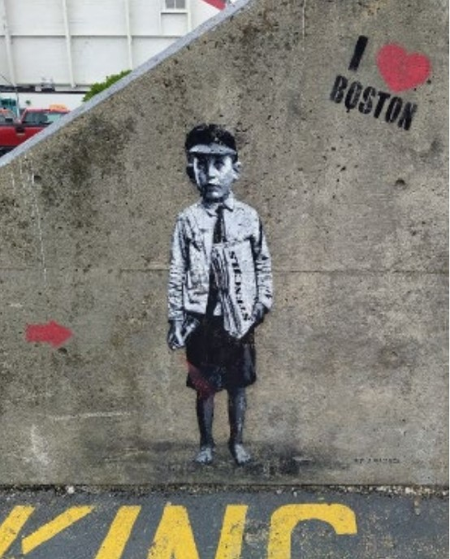

Banksy is NOT the Creator

What makes Banksy particularly interesting is the fact that nobody knows his identity, something that is vital to his artwork, because it is mostly created illegally. Banksy is famous for creating street art, primarily in the London area. His art is satirical and uses a lot of dark humor to execute his message using a stenciling graffiti technique. Banksy primarily uses black and white in his street paintings, with occasional small splashes of color, using high contrast. Most of his works are critiquing society in some way, and he does this by placing his works in famous, high-trafficked areas, where his pieces are sure to be seen and recognized.
The piece on Gainsborough Street is not a Banksy piece. The main giveaway for this is the location of the painting. Banksy loves to draw attention to his work and whatever his message might be, so he puts his pieces in easily accessible areas. This painting is in a parking lot in the back of Northeastern’s campus that isn’t traversed a lot. The next give away is that the art style, while similar, isn’t Banksy’s. There are too many details in the face, and there are greys to smooth the transition from white to black, while Banksy’s work is famous for that strong contrast of black and white.